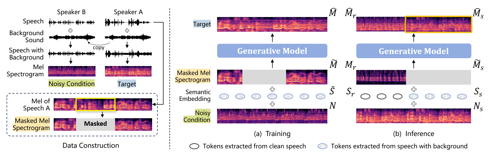

E2E-BPVC: End-to-End Background-Preserving Voice Conversion via In-Context Learning
Abstract
Voice conversion (VC) systems are always trained on clean speech and are unable to function properly in the presence of background sound/noise. However, in many instances, the background sound of speech and the context in which the speech occurs are semantically highly relevant and should also be retained. Existing approaches address this issue by incorporating a denoising module to separate speech from background sound before applying voice conversion, which increases system complexity and may lead to extra distortion. In this paper, we propose an end-to-end background-preserving voice conversion (E2E-BPVC) framework for the first time. By leveraging in-context learning (ICL), our model simultaneously modifies speech timbre and retains background sounds without requiring a separate denoising step. Both objective and subjective evaluations demonstrate that our method achieves performance comparable to denoising-based BPVC frameworks while maintaining a more streamlined and efficient system design.
E2E-BPVC: End-to-End Background-Preserving Voice Conversion via In-Context Learning
Abstract
Voice conversion (VC) systems are always trained on clean speech and are unable to function properly in the presence of background sound/noise. However, in many instances, the background sound of speech and the context in which the speech occurs are semantically highly relevant and should also be retained. Existing approaches address this issue by incorporating a denoising module to separate speech from background sound before applying voice conversion, which increases system complexity and may lead to extra distortion. In this paper, we propose an end-to-end background-preserving voice conversion (E2E-BPVC) framework for the first time. By leveraging in-context learning (ICL), our model simultaneously modifies speech timbre and retains background sounds without requiring a separate denoising step. Both objective and subjective evaluations demonstrate that our method achieves performance comparable to denoising-based BPVC frameworks while maintaining a more streamlined and efficient system design.
Architecture Overview

The overview of the E2E-BPVC system. The semantic embedding is extracted using a pre-trained WavLM model. The system is trained to disentangle background sound from noisy input while simultaneously leveraging contextual information from the unmasked mel spectrogram, aligning with in-context learning.
Noise Background Samples
This section evaluates the systems' voice conversion capability with background noise. It converts the timbre of the source speech to match the timbre of the reference speech while preserving the content and background noise of the source speech. (The source and reference speeches are selected from the LibriTTS test-clean set and the source is further superimposed with additive background noise clip.)
| Reference Speech |
Source Speech |
ICL-VC |
Denoise-VC II |
E2E-BPVC |